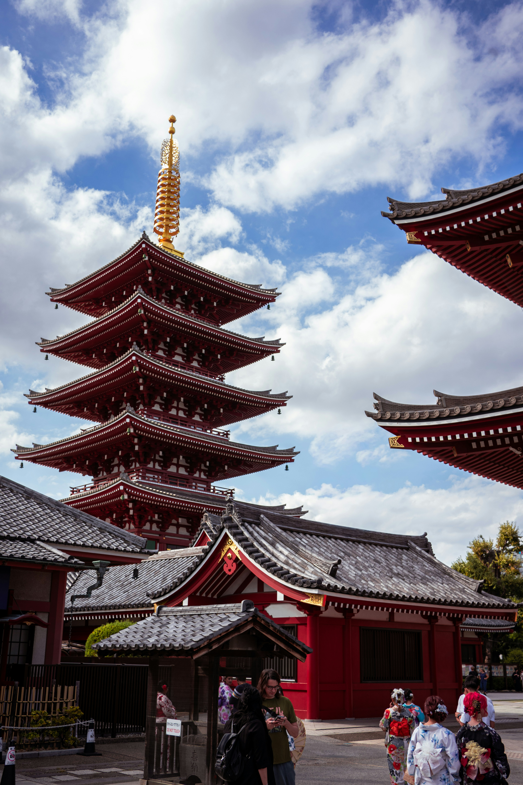

About Tokyo
Tokyo is the sprawling, electric capital of Japan — a megacity of over 13 million people that somehow feels both overwhelming and perfectly organised. It is a city of contrasts: ancient Shinto shrines stand in the shadow of glittering skyscrapers, and quiet neighbourhood alleys hide Michelin-starred restaurants.
Whether you are drawn by the neon-lit chaos of Shinjuku, the pop-culture immersion of Akihabara, or the serene greenery of Shinjuku Gyoen, Tokyo offers an experience unlike anywhere else on Earth.
Key Facts
- Capital city of Japan since 1869
- Population: approx. 13.9 million (metro area: 37 million)
- World's busiest train network — over 8 million passengers daily
- Home to more Michelin-starred restaurants than any other city on the planet
- Host of the 2020 (2021) Summer Olympic Games
Top Sights
Tokyo's neighbourhoods each have their own distinct identity. From the old-world charm of Asakusa to the fashion-forward streets of Harajuku, there is a corner of Tokyo for every kind of traveller.



Must-Do Experiences
Tokyo rewards the curious traveller. Below is a ranked list of experiences you simply should not miss on your first visit.
- Visit Senso-ji Temple at dawn before the crowds arrive
- Watch the sunrise from the Tokyo Skytree observation deck
- Explore the Tsukiji Outer Market for the freshest sushi breakfast
- Lose yourself in Akihabara — the mecca of anime and electronics
- Stroll through Shinjuku Gyoen during cherry blossom season
- Experience the Harajuku Takeshita Street fashion scene
- Take a day trip to Nikko or Kamakura
Practical Tips
- Get a Suica IC card for seamless travel on trains and buses
- Most convenience stores (コンビニ) are open 24 hours and sell excellent food
- Cash is still king in many smaller restaurants — carry some Yen
- Download Google Maps offline for Tokyo before you arrive
See Tokyo in Action
Watch this short documentary-style overview of Tokyo to get a feel for its energy before you visit:
Useful Links
Plan your trip using these official and trusted resources: